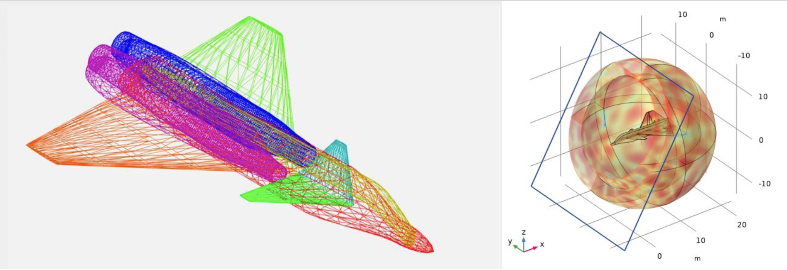
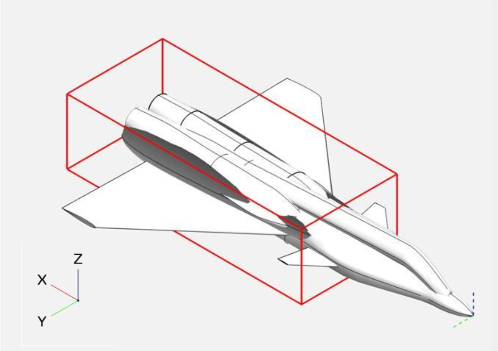

Radar-Minimizing Aircraft Geometry

An iterative computational study focused on minimizing the Radio Cross Section (RCS) of stealth aircraft. Using COMSOL Multiphysics and OpenVSP, this project modeled 2D and 3D electromagnetic wave scattering to evaluate how different topology and parametric design choices affect radar visibility.
Skills Used
Media
See some of the project highlights here.

